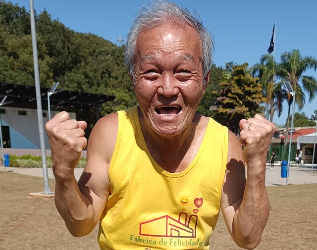

Fábrica de Felicidade - 2022
Burnout - O que é? Dá para prevenir? Como tratar?
Por Shin em
Mas o que é burnout?
Com uma simples pesquisa no Google, foi buscado o termo burnout para ver por onde começar a escrever este artigo. Eis que no topo da pesquisa apareceu: Evite o Burnout: Aumente o foco do colaborador. Analisando isso, burnout não seria esgotamento do colaborador? Aumentar o foco dele seria a solução? Talvez aí esteja uma das razões de um aumento significativo de 900% sobre a busca deste termo, que está cada vez mais presente nas empresas.
No mundo cada vez mais globalizado com concorrência por todas as partes e o bombardeio de informações 24 horas por dia, é muito difícil se manter no sucesso. Porém a cobrança é inevitável. Na verdade, é uma bola de neve. Você é cobrado pelo seu chefe, que o superior dele também está ligando para ele e por fim, o dono da empresa está ameaçando este superior de demissão. Como não existe trégua em nenhum dos pontos, se tudo sair nos conformes, alguém certamente terá problemas de stress. Que se não tiver uma devida atenção, fatalmente será mais um na estatística do burnout.
Estou com Burnout?
De repente, as mãos não param de suar. O ar parece que fica mais difícil de respirar. Uma dor na nuca devido a pressão estar super alta. Cansaço insuportável onde todos os dias parecem ter 30 horas. Se ninguém te avisar, fica a dica: são alguns dos sintomas do burnout, segundo Drauzio Varella. (Procure um médico para diagnóstico, internet não é consultório)
Então, o que fazer? Saúde!
Para evitar chegar a esse extremo ou até mesmo para melhorar se já chegou, a resposta é: hora de fazer as coisas básicas do ser humano. É sobre o viver normal, viver a vida. Descontar em comidas doces e gordurosas, bebidas alcoólicas e qualquer outro tipo de droga não é a solução. Essas coisas oferecem um prazer momentâneo que acaba por piorar mais a situação.
Seu corpo precisa encontrar um equilíbrio. Atividades físicas. Alimentação saudável. Respirar de forma correta. É viver o simples. Não é jogar tudo pro ar e chutar o balde. É encaixar uma rotina equilibrada entre o trabalho e a vida.
É possível dar tudo de si no trabalho, sem esquecer a hora de se desconectar quando a missão estiver cumprida. E se não chega nunca, pode ser um bom momento para ser franco e pedir ajuda.
O ponto a ser ressaltado é: Burnout não é o normal do ser humano. O contexto atual em que vivemos tende a fazer esquecer da saúde, o cuidado com a alimentação, manter relações com pessoas queridas. Inclusive, a gratidão além de ser esquecida (gratidão que é um dos pilares da felicidade), ainda é criticada por quem a pratica.
Enfim. Tudo isso aí é o que temos a falar sobre burnout.
Nossa solução: Felicidade no Trabalho
Mas espere. A Fábrica de Felicidade tem a proposta de levar felicidade para as empresas, numa missão de combater o Burnout e incentivar a saúde. Levar todo o benefício de pessoas felizes para o ambiente corporativo. Sim, felicidade no trabalho. Existe e somos prova viva.
Não ter sucesso para ser feliz. O normal de hoje está invertido. O mais natural é ser feliz para obter sucesso, pois empresas nada são mais do que pessoas.
Converse com o seu RH sobre esta moderna forma de sucesso nas grandes empresas.
E este é o Senhor Miyagi com seus 70 anos te esperando para acabarmos com o Burnout!
Um forte abraço e gratidão pela leitura. 😉